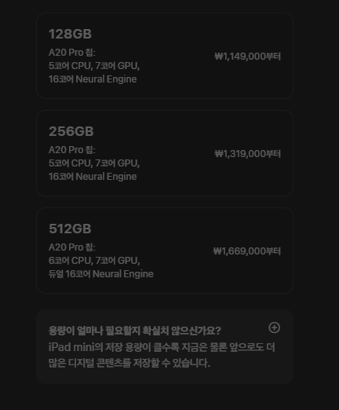
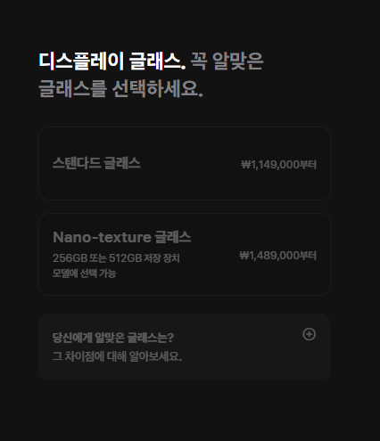
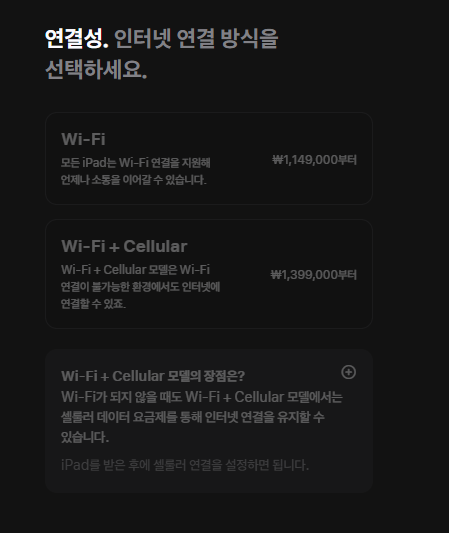
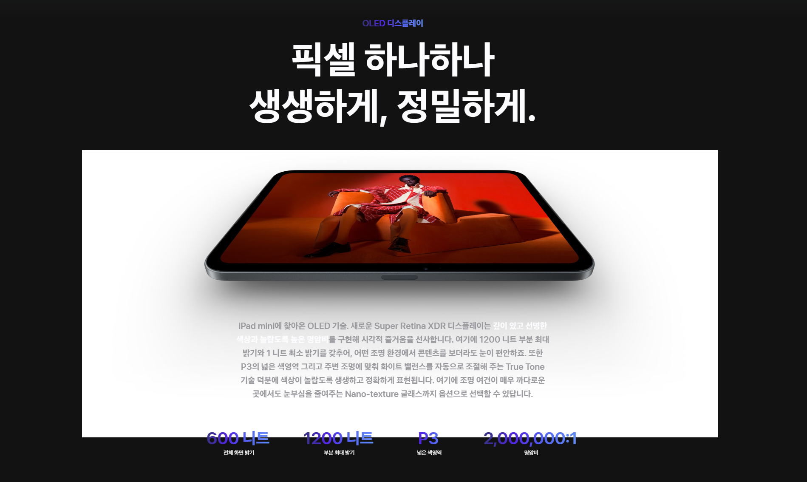

128긱 : 115만원
256긱 : 132만원
512긱 : 167만원
A20 pro칩인데 512긱만 정상 A20pro칩이고 (아이폰18pro의 A20pro칩은 6코어/7 gpu구성)
128,256기가 모델은 아마 A20pro칩 생산하다가 코어 하나 죽은거 짬처리용으로 A20pro 5코어/7gpu로 칩 티어 더 세분화한듯
참 알뜰살뜰하다;

반사방지는 256gb부터 적용가능. 당연히 옵션비용은 별도임

당연히 와파모델 셀룰러 모델 옵션 별도임
그리고 당연하게 셀룰러는 e심전용모델임(k esim 때문에 고통받을 애플팬보이들 묵념)
마지막으로

120hz ㄴㄴ 그냥 60hz인듯
<추가> 메모리 8기가 라는 소리나옴 ㄷㄷㄷ
한줄요약 : 사실상 버림받은것같은 듀오 그리고 또 60hz인 패드 아이패드 미니
정상인들이라면 에어나 프로 쓰자